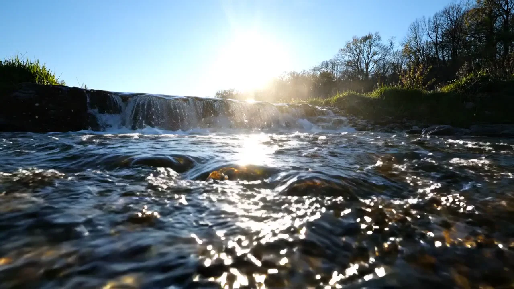

BioFlux
Open-source workflows for bacterial and fungal genomics, microbiome profiling and machine learning.
Play the BioFlux intro 0:22
Open-source workflows for bacterial and fungal genomics, microbiome profiling and machine learning.
Play the BioFlux intro 0:22